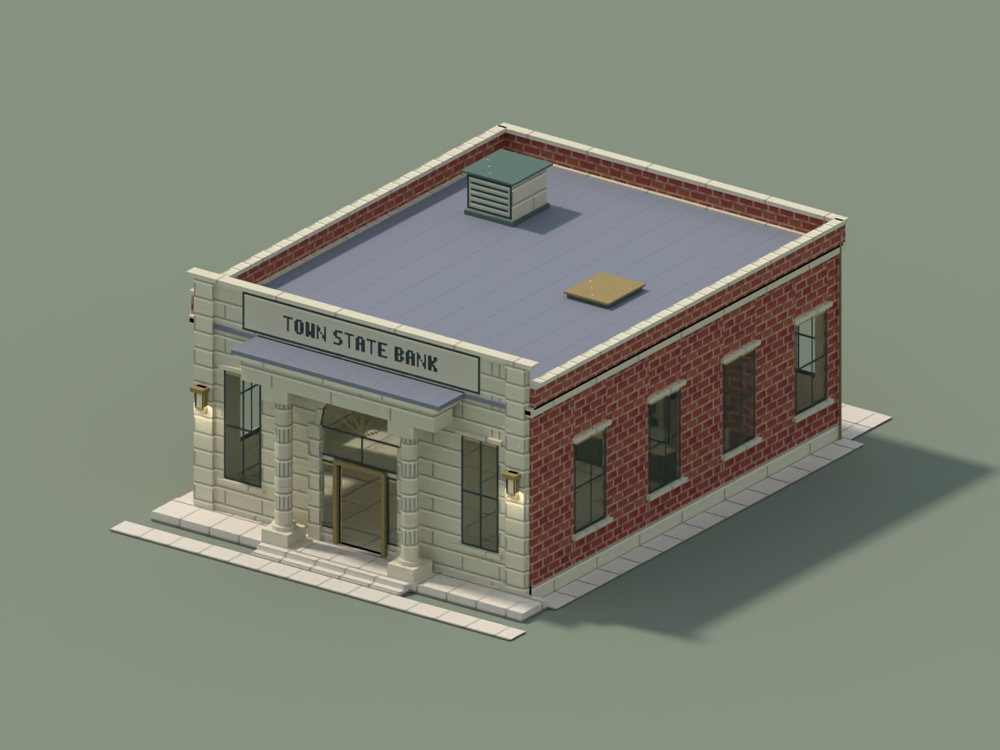
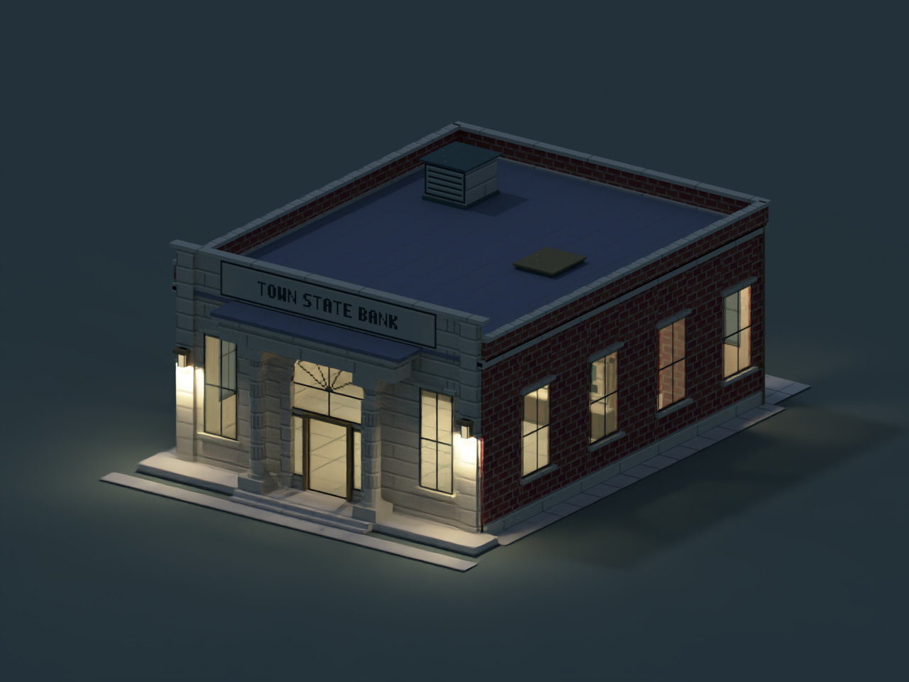
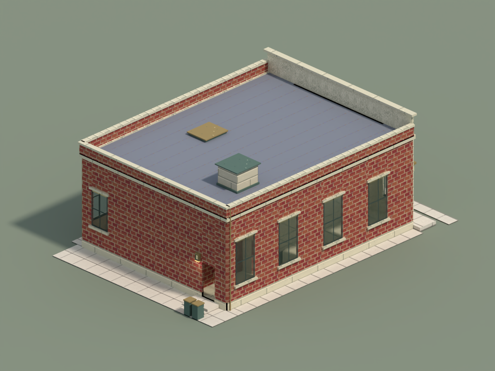
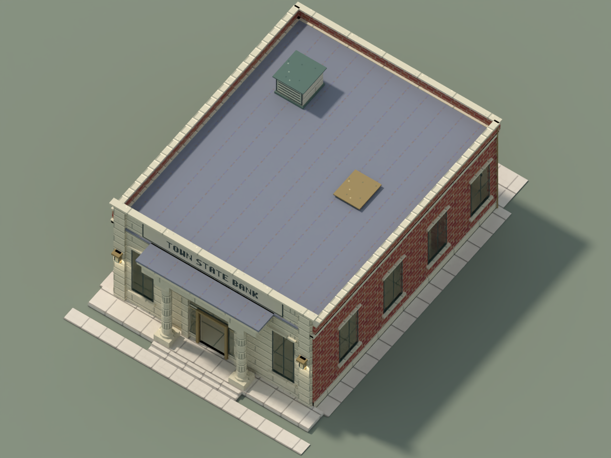
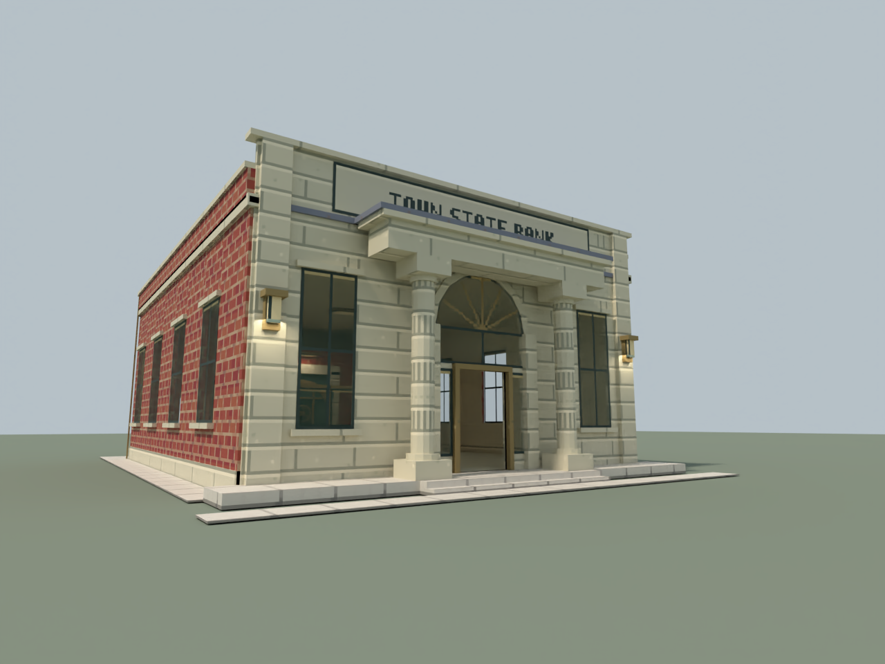
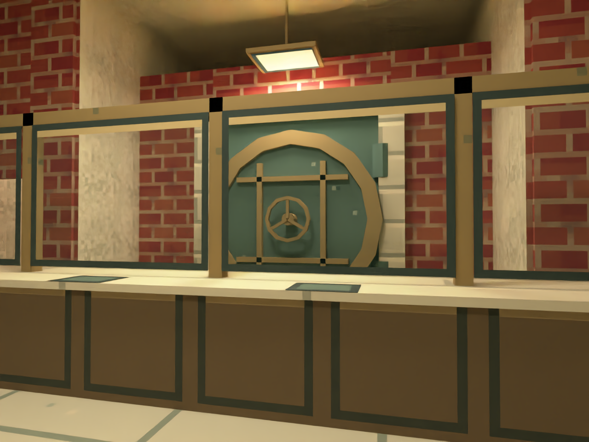
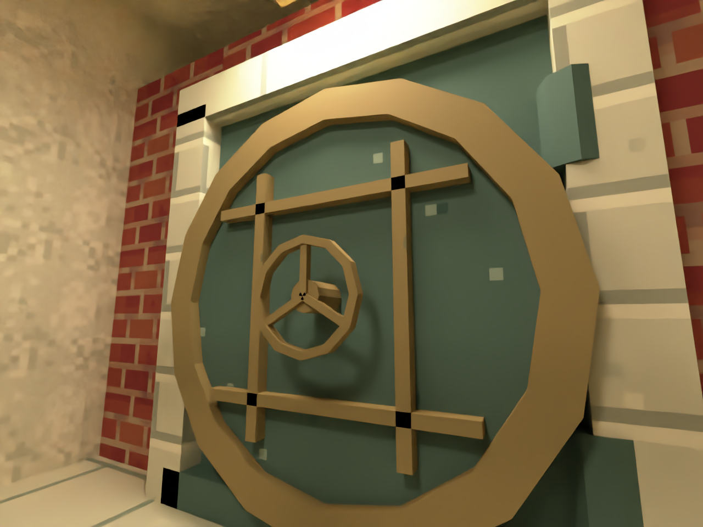
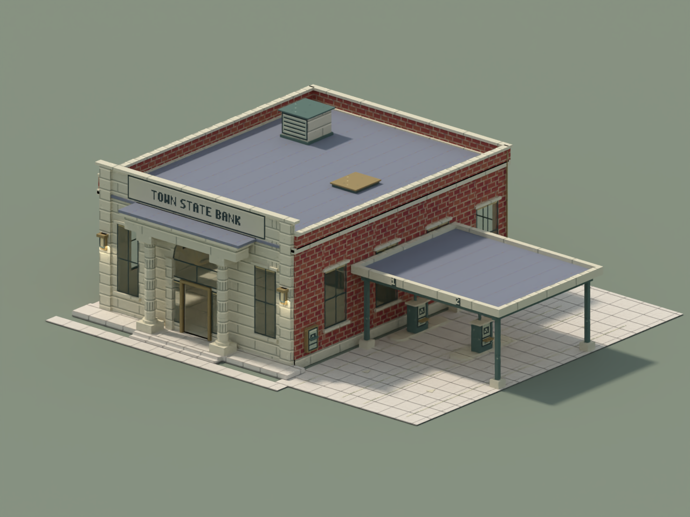
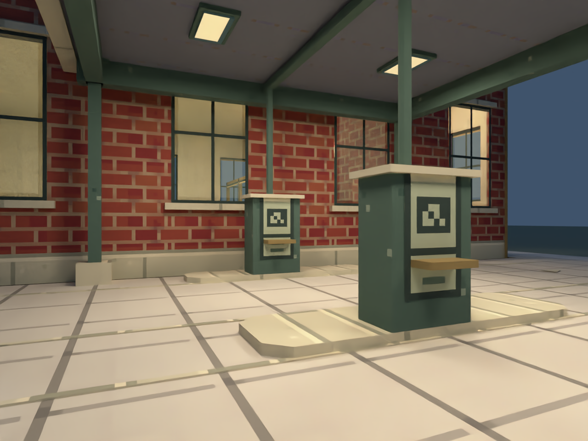

Town State Bank
A 1920s stone portico and high banking hall, with a fixed vault and four teller wickets. A separate 1965+ version adds two drive-through lanes, pneumatic conduit and a night deposit fixture. The town name is repainted on the carved frieze. Select one state from actual town history. All views are Blender desktop renders, not Filament/S25 captures; game navigation, lighting, collision parsing and banking interactions remain integration work.

Stone portico, arched transom and repaintable frieze
Warm hall, bronze surrounds and lit lanterns
Brick service side, open staff entry and finished roof
Complete shell, parapets and supported roof details
Open public entrance from pedestrian height
Four fixed teller wickets, offices and vault beyond
Fixed vault: circular leaf, locking bars and handwheel
1965+ addition: two lanes and pneumatic conduit
Driver eye: separate terminals and clear canopy